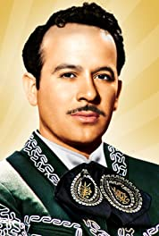

 Pedro Infante (Mazatlán, Sinaloa; 18 de noviembre de 1917-Mérida, Yucatán; 15 de abril de 1957) fue un cantante y actor mexicano. Es considerado uno de los actores más recordados del cine en México. A partir de 1939 apareció en más de 60 películas, y desde 1943 grabó aproximadamente 314 canciones del género musical ranchera. Por su actuación en la película Tizoc (1956), fue ganador de un Oso de Plata del Festival Internacional de Cine de Berlín en la categoría a «mejor actor principal», y también obtuvo un premio Globo de Oro por mejor película extranjera, el cual se le fue otorgado por la prensa extranjera acreditada en Hollywood.
Discografía favorita